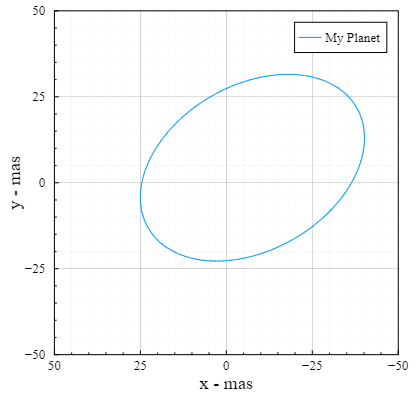

DirectOrbits.jl
Tools for solving Keplerian orbits in the context of direct imaging. The primary use case is mapping Keplerian orbital elements into Cartesian coordinates at different times. A Plots.jl recipe is included for easily plotting orbits.
Among other values, it calculates the projected positions of planets, as well as stellar radial velocity and proper motion anomaly. It's a great tool for visualizing different orbits (see examples) and generating nice animations (e.g. with Plots or Luxor.jl).
This package has been designed for good performance and composability with a wide range of packages in the Julia ecosystem, including ForwardDiff.
To fit orbits to observations, see DirectDetections.jl.
See also DirectImages.jl.
